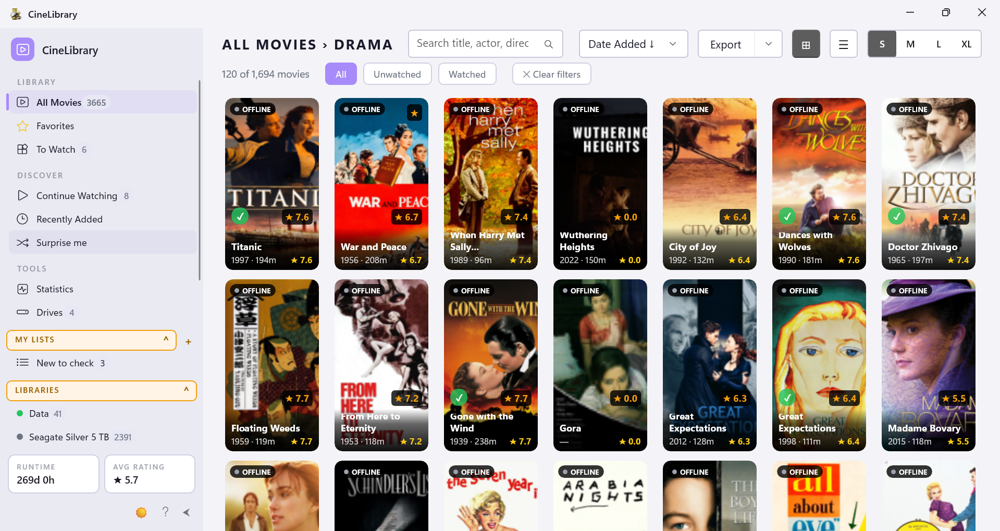
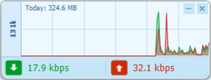

PocketReader
Turn your Raindrop.io bookmarks into a fast, private, fully-offline reading library.

CineLibrary
Catalog and browse your movies and TV shows across multiple external drives.
CineLibrary Essentials
Rename, organize, and scrape rich metadata for movies and TV shows — Plex/Kodi/Jellyfin-ready.
Picasa Portable for Win 11
A portable, sandboxed Picasa 3.9 — runs from any folder, scans only its own Pictures subfolder, leaves zero trace.

NetMon
Lightweight network bandwidth widget. Sits in the corner, gets out of the way.

AKK Dictionary
Offline English-to-Myanmar dictionary. Fast lookup, clean reader, no internet required.